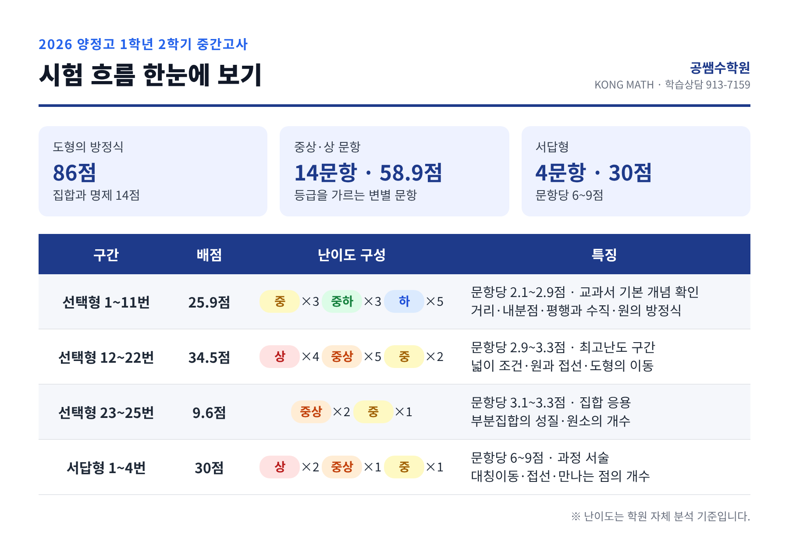
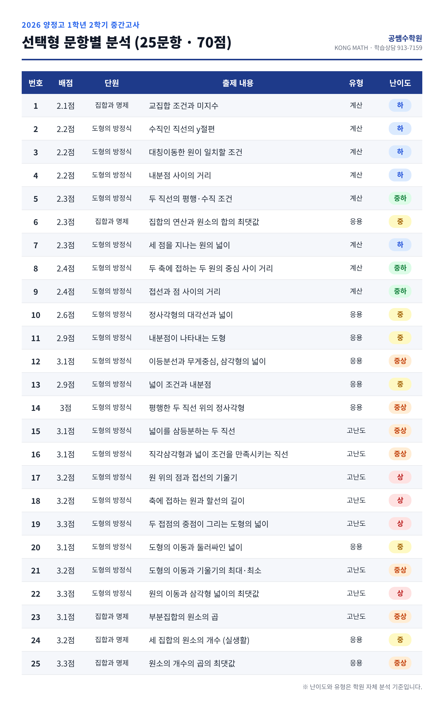
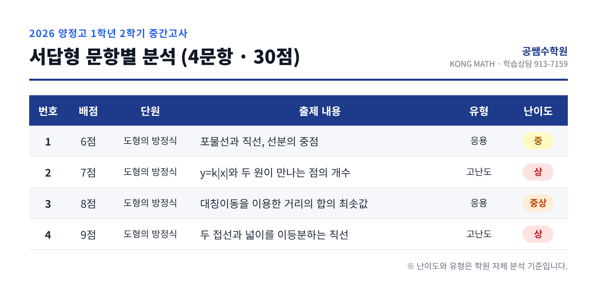

안녕하세요 공쌤수학원입니다

2026학년도 부산양정고등학교 1학년 2학기 중간고사 수학(공통수학2) 시험지 분석자료입니다
(본 자료는 공쌤수학원 자체 분석 결과표입니다)
양정고는 1학년 2학기 부교재로 「유형 + 내신 고쟁이 공통수학2」를 사용합니다.
내신 실전 문제와 변별력 있는 문항이 많은 교재로,
기본을 넘어 상위권 문항까지 대비하라는 학교의 기대가 담긴 선택입니다.
실제로 이번 시험은 25문항에 고난도 문항 비중이 높아,
부교재의 어려운 문제까지 끝까지 풀어 본 학생이 등급을 지킬 수 있었습니다.


양정고 시험은 문항 번호에 따라 난이도가 뚜렷하게 올라가는 구조입니다
선택형 17번
원이 x축과 만나는 두 점이 지름의 양 끝이라는 것을 알아차리는 것이 출발점입니다.
지름에 대한 원주각은 90°이므로 피타고라스 정리로 길이를 바로 구할 수 있고,
접선은 반지름에 수직이라는 성질로 기울기를 구합니다.
중학교 도형 성질을 함께 떠올리면 짧게 풀리고,
원의 방정식만으로 연립하면 계산이 길어지는 문항이었습니다.
선택형 18번
x축에 접하는 원은 반지름이 중심의 y좌표와 같다는 점이 핵심입니다.
y축이 자르는 현과 직선이 자르는 현의 길이를
각각 '2√(반지름² − 거리²)'로 놓고 두 식을 세우면 됩니다.
선택형 19번
이번 시험에서 가장 까다로운 문항 중 하나입니다.
점 P가 움직일 때 두 접점을 이은 선분의 중점 M이
어떤 도형을 그리는지 찾아야 합니다.
직각삼각형의 닮음을 이용하면 OM × OP의 값이 일정하다는 것을 알 수 있고,
여기서 M이 원을 그린다는 것을 파악해야 합니다.
선택형 22번
평행이동과 대칭이동을 거친 점 Q도 결국 원 위의 점이라는 것을 파악하는 것이 핵심입니다
넓이의 최댓값은 '원의 중심과 직선 사이의 거리 + 반지름'을 높이로 잡으면 구할 수 있습니다.
마지막에 구하는 값이 Q가 아니라
처음 점 P의 x좌표라는 점에서 실수가 많이 나올 수 있는 문항입니다.
선택형 23번
23번은 공집합이 아닌 부분집합 31개를 직접 나열하지 않고,
'각 원소가 몇 개의 부분집합에 들어가는가'로 생각해야 시간 안에 풀 수 있습니다.

서답형 2번
그래프를 x≥0, x<0 두 부분으로 나누어 각 원과 만나는 점의 개수를 따져야 합니다
특히 x<0 쪽 그래프도 오른쪽 원과 만날 수 있다는 점을 놓치면 범위의 끝값이 틀어집니다
경우를 나누는 과정이 그대로 서술 점수가 되는 문항이었습니다
서답형 4번
원 밖의 한 점에서 그은 두 접선이 x축과 만나는 점을 구하고,
삼각형의 넓이를 이등분하는 직선을 찾는 문제입니다
y=ax+a가 a에 관계없이 항상 점 (?,?)을 지난다는 것을 발견하는 것이 핵심입니다
접선의 방정식 → 교점 → 넓이 이등분까지 단계가 길어 풀이 과정 정리가 중요했습니다
![[2026 학교별 기출문제 분석] 양정고 1학년 2학기(공통수학2) 중간고사 분석 자료 4](imges/reports/224474379942-04.png)
다음 시험 대비 포인트
1. 기본 11문항은 시간 단축이 목표입니다
25문항 + 서답형 4문항 구성이라 시간이 빠듯합니다.
1~11번 같은 기본 문항은 정확하면서도 빠르게 푸는 연습을 해 두어야
뒤쪽 고난도 문항에 시간을 쓸 수 있습니다.
2. 원과 접선은 '거리'로 해석하는 습관이 필요합니다.
이번 시험의 고난도 문항 대부분이 원의 중심과 직선 사이의 거리, 반지름, 현의 길이 관계로 풀렸습니다
식을 무작정 연립하기보다 그림을 그리고 거리로 해석하는 연습이 필요합니다
3. 중학교 도형 성질도 함께 복습해야 합니다.
원주각, 닮음, 무게중심처럼 중학교에서 배운 도형 성질을 알고 있으면
좌표 계산이 크게 줄어드는 문항이 많았습니다.
4. 서답형은 경우 나누기와 단계별 풀이 정리가 핵심입니다.
서답형 2번처럼 경우를 나누는 문제,
3·4번처럼 단계가 긴 문제는 과정마다 부분 점수가 있습니다
답만 구하는 연습이 아니라 풀이를 처음부터 끝까지 써 보는 연습이 필요합니다.
공쌤수학원은 이렇게 준비합니다

1:1 맞춤 수업
양정고 시험처럼 기본 문항과 고난도 문항의 차이가 큰 시험은,
학생마다 막히는 지점이 전혀 다릅니다
공쌤수학원은 1:1 수업으로 학생 한 명 한 명의 수준에 맞춰 진도를 나갑니다
기본이 부족한 학생은 교과서 개념부터 탄탄히 다지고,
기본을 다진 학생은 선택형 17~19·22번 같은 고난도 문항까지 끌어올립니다.

철저한 서술형 대비
이번 시험에서 서답형은 4문항 30점이었습니다.
고등학교 서답형은 풀이 과정마다 부분 점수가 있어,
답이 맞아도 과정이 부족하면 감점됩니다.
공쌤수학원은 답만 맞히는 연습이 아니라
풀이 과정과 근거를 직접 써 보고 첨삭받는 훈련으로 서술형 감점을 줄입니다.
공쌤수학원 · 부산광역시 부산진구 신천대로 192 3, 4층
학습상담
051-913-7159
010-7419-7159
#부암역학원, #당감동학원, #부전동학원, #근처수학학원, #근처수학학원추천, #학원, #수학학원, #초등수학학원, #중등수학학원, #고등수학학원, #중등수학학원비, #초등수학학원비, #고등수학학원비, #학원장학금, #공쌤수학원, #공쌤수학, #부산학원, #부산학원추천, #서면학원추천, #전포학원추천, #부전동수학학원, #근처스카 #부암스터디카페 #서면스카 #부암학원 #덕명여중 #진여중 #진중 #개성중 #항도중 #부전초 #성지초 #부암초 #부산진초 #선암초 #진중 #서면중 #가야여중 #광무여중 #동고 #동성고 #개금고 #개성고 #가야고 #진고 #진여고 #데레사고 #성모여고 #한얼고 #마케팅고 #주례여고 #문현여고 #관리형독서실 #관리형스카 #관리형스터디카페 #공쌤수학원자습실 #일대일학습 #일대일맞춤학습 #서술형대비 #중간고사 #기말고사 #중간고사대비 #항도중중간고사 #항도중학교 #양정고기출 #양정고시험 #고등학교시험 #양정고부교재
네이버 블로그 원문 ↗


![[2026 학교별 기출문제 분석] 부산진여고 1학년 2학기(공통수학2) 중간고사 분석 자료 1](imges/reports/224473167712-01.png)
![[2026 학교별 기출문제 분석] 부산진여고 1학년 2학기(공통수학2) 중간고사 분석 자료 2](imges/reports/224473167712-02.png)


![[2026 학교별 기출문제 분석] 덕명여중 3학년 2학기 정기고사 분석 자료 1](imges/reports/224463840005-01.png)

![[2026 학교별 기출문제 분석]진여중 3학년 2학기 정기고사 분석 자료 1](imges/reports/224463818463-01.png)
![[2026 학교별 기출문제 분석] 항도중 3학년 2학기 정기고사 분석 자료 1](imges/reports/224463801122-01.png)
![[2026 학교별 기출문제 분석] 가야여중 2학년 2학기 중간고사 분석 자료 2](imges/reports/224458185532-02.png)
![[2026 학교별 기출문제 분석] 가야여중 2학년 2학기 중간고사 분석 자료 3](imges/reports/224458185532-03.png)
![[2026 학교별 기출문제 분석] 항도중 2학년 2학기 중간고사 분석 자료 1](imges/reports/224458181906-01.png)
![[2026 학교별 기출문제 분석] 항도중 2학년 2학기 중간고사 분석 자료 2](imges/reports/224458181906-02.png)
![[2026 학교별 기출문제 분석] 항도중 2학년 2학기 중간고사 분석 자료 3](imges/reports/224458181906-03.png)
![[2026 학교별 기출문제 분석] 동중 2학년 2학기 중간고사 분석 자료 2](imges/reports/224458178071-02.png)
![[2026 학교별 기출문제 분석] 동중 2학년 2학기 중간고사 분석 자료 3](imges/reports/224458178071-03.png)
![[2026 학교별 기출문제 분석] 개성중 2학년 2학기 중간고사 분석 자료 1](imges/reports/224458165046-01.png)
![[2026 학교별 기출문제 분석] 진여중 1학년 2학기 중간고사 분석 자료 3](imges/reports/224456718747-03.png)
![[2026 학교별 기출문제 분석] 항도중 1학년 2학기 중간고사 분석 자료 1](imges/reports/224455449746-01.png)
![[2026 학교별 기출문제 분석] 항도중 1학년 2학기 중간고사 분석 자료 2](imges/reports/224455449746-02.png)
![[2026 학교별 기출문제 분석] 항도중 1학년 2학기 중간고사 분석 자료 3](imges/reports/224455449746-03.png)


![[공쌤장학금 수여식] 공쌤장학금 26학년도 2학기 중간고사 사진 1](imges/students/224470456122-01.jpg)


![[공쌤장학금 수여식] 26년 1학기 기말고사 사진 2](imges/students/224369881711-02.jpg)


![[공쌤장학금 수여식] 26년 1학기 중간고사 사진 2](imges/students/224289502963-02.jpg)